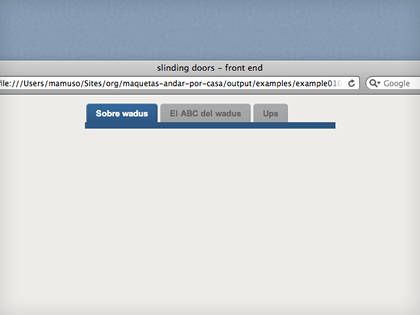
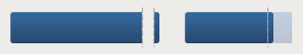

sliding doors
Esta técnica es tan chula como milenaria, y sigue siendo tan útil como el primer día.
Se trata de jugar con dos fondos de manera que actúen como puertas correderas. Uno cubre el fondo y un lado y el otro hace de cierre.

Lo clasicazo de esta técnica es usarla para hacer pestañas o botones, usualmente con bordes redondeados. El código para hacer unas pestañas podría ser tan sencillote como este:
<ul id="nav">
<li class="active"><a href="#">Sobre wadus</a></li>
<li><a href="#">El ABC del wadus</a></li>
<li><a href="#">Ups</a></li>
</ul><!-- #nav -->
Al final lo mejor es ver el ejemplo :)